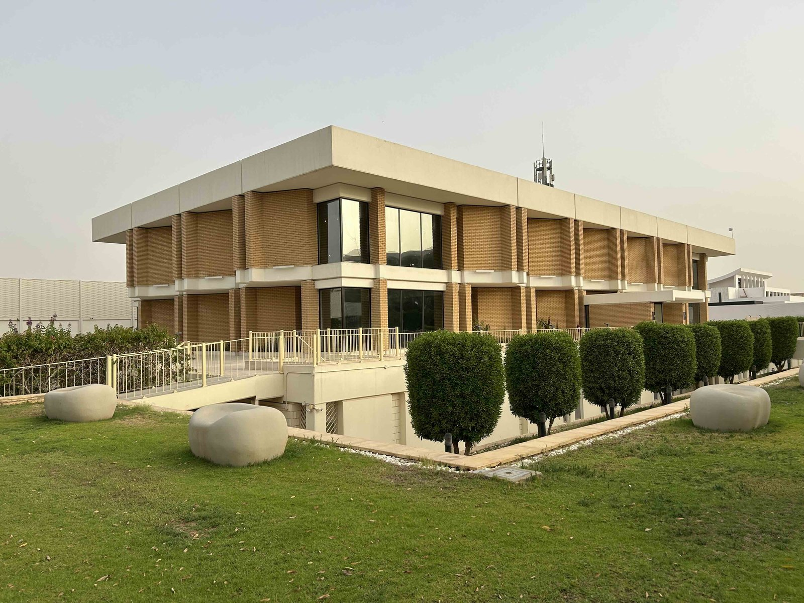
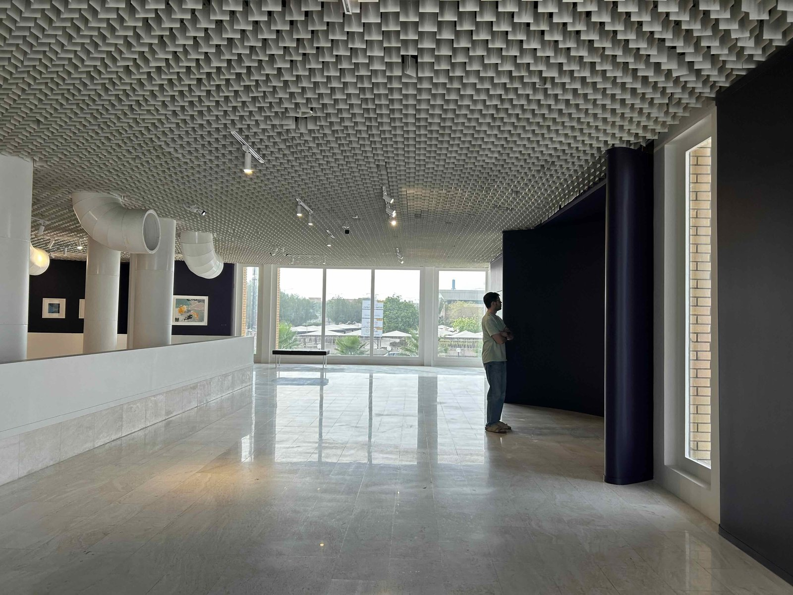
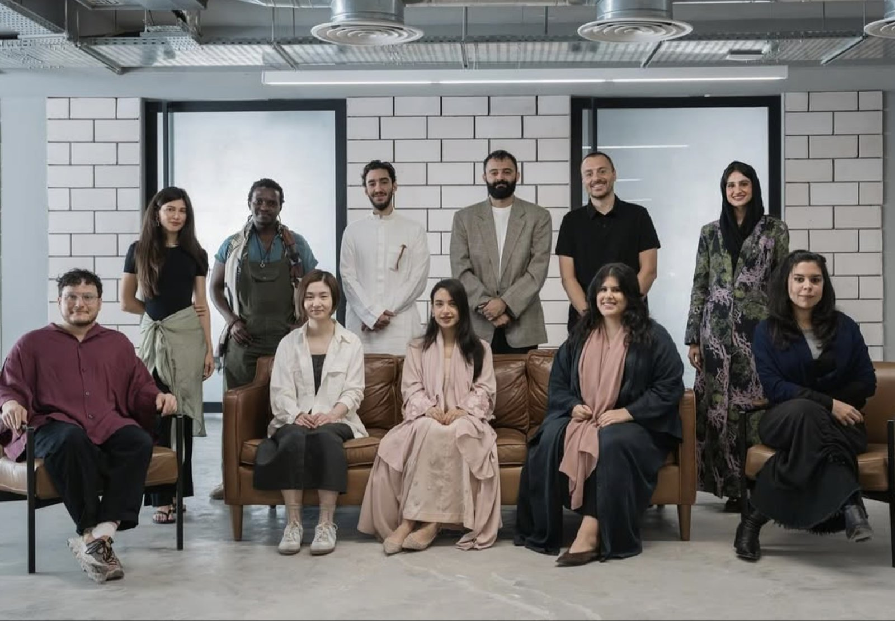
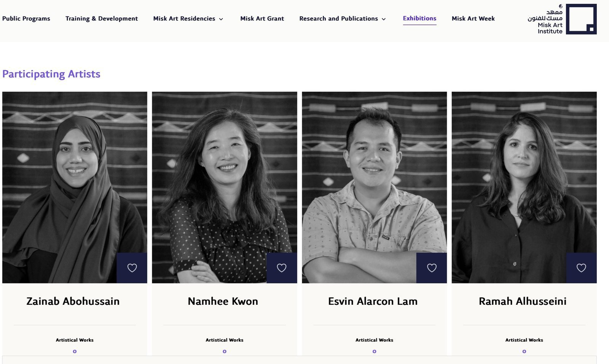
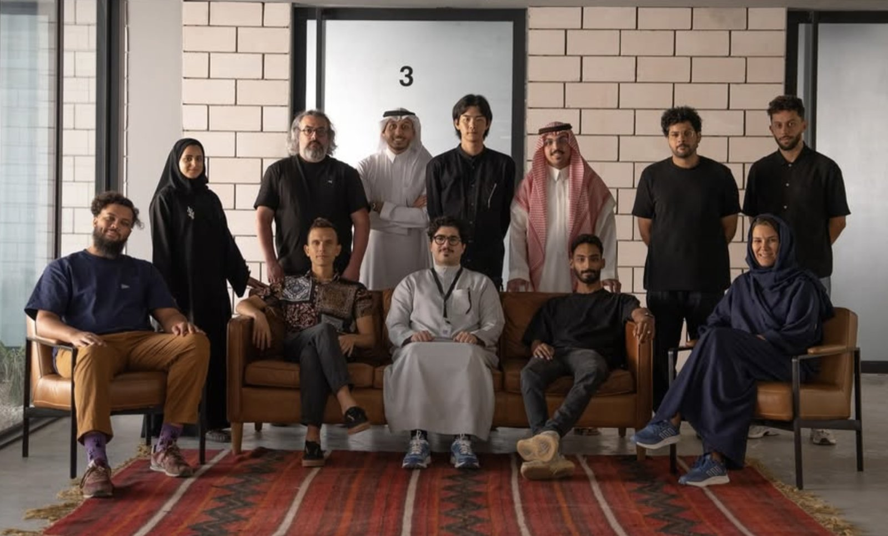
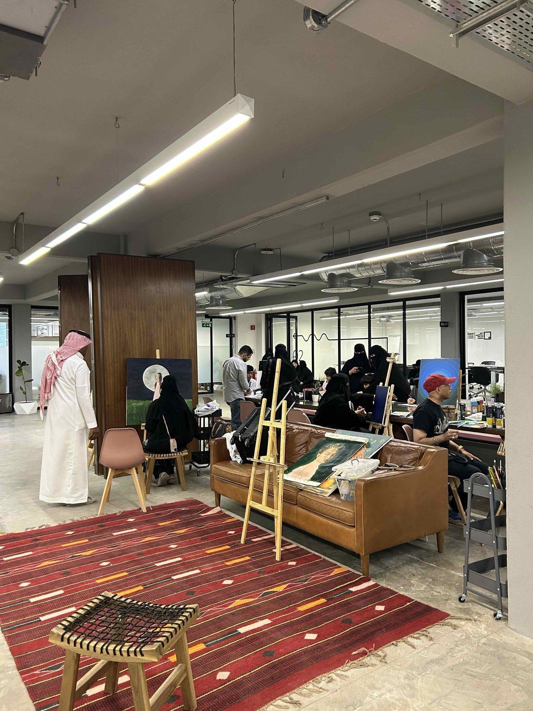
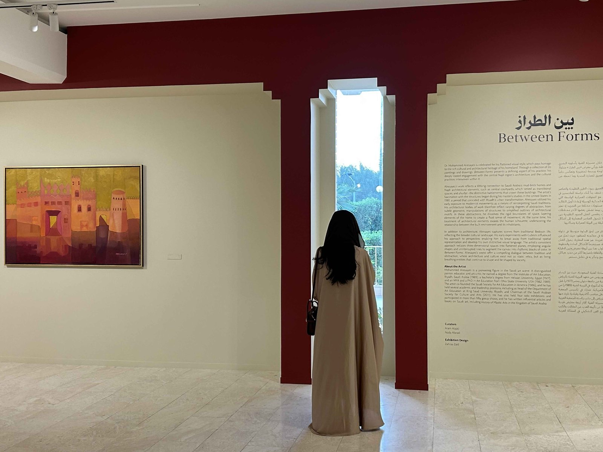
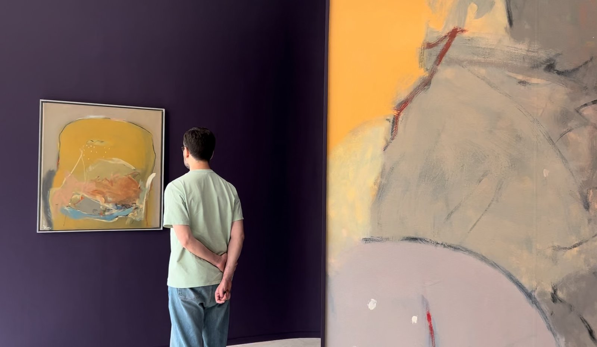
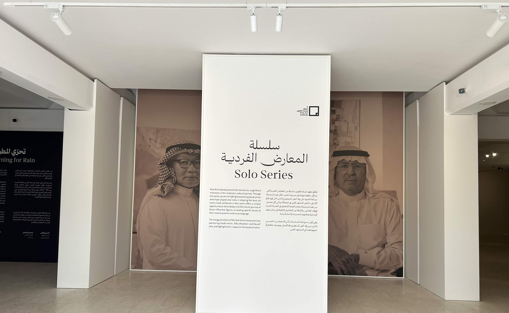

창작과 교류의 허브, 미스크 아트 인스티튜트
미스크 아트 인스티튜트(Misk Art Institute)는 무함마드 빈 살만 비영리재단(Mohammed bin Salman Non-Profit Foundation, Misk) 산하 기관으로 2011년 무함마드 빈 살만 왕세자가 젊은 세대의 학습과 리더십 개발을 장려하기 위해 설립한 미스크 재단이 그 모태다. 예술 부문을 담당하는 미스크 아트 인스티튜트는 리야드 프린스 파이살 빈 파드 예술홀(Prince Faisal bin Fahd Arts Hall)에 본부를 두고 창작부터 전시, 교류까지 아우르는 비영리 문화 기관으로서 공공 프로그램·레지던시·전시·출판 등 다양한 사업을 운영한다.

▲ 프린스 파이살 빈 파드 예술홀 건물 — 출처: 통신원 촬영

▲ 건물 내부 전시장 — 출처: 통신원 촬영
미스크 아트 인스티튜트가 주최하는 <마사하 레지던시 프로그램(Masaha Residency Program)> 10기는 9월 14일부터 12월 12일까지 진행한다. 이번 회차의 주제는 '아는 것의 경계에서(At the Edge of Knowing)'로 진실과 인식, 기억의 불확실한 경계를 탐구한다. 입주 작가들은 스튜디오 기반 창작, 멘토링, 문화유적 탐방, 비평 세션을 거치며 오는 12월 열릴 <미스크 아트 위크 2025(Misk Art Week 2025)>를 준비하고 있다. 특히 레지던시 프로그램들은 미스크의 핵심 축이다. 리야드 현지에서 세계 각국의 예술가를 초청하는 마사하 레지던시(Masaha Residency)와 사우디 예술가를 해외 기관에 파견하는 국제 레지던시 프로그램(International Residency Program)으로 나뉜다. 이 두 프로그램은 해외 예술가들이 리야드의 지역성과 만나도록 하고 사우디 예술가들이 세계 무대에서 시야를 넓히도록 하는 양방향 예술 교류 플랫폼으로 기능한다.

▲ 마사하 10기 레지던시 프로그램 입주 작가 — 출처: 미스크 아트 인스티튜트
여기에 한국 작가들도 참여해왔다. 2021년 <홈: 존재와 소속(Home: Being and Belonging)> 2기 레지던시에는 개념미술을 위주로 작업하는 한국 작가 권남희(Namhee Kwon)가 참여해 소속감과 정체성을 주제로 한 설치 작업을 선보였으며 2023년에는 6기 입주작가로 시각예술가 장진승(Jinseung Jang)이 <마사하 레지던시 쇼케이스(Masaha Residency Showcase)>에 참가해 사우디 작가들과 공동 전시를 진행했다. 이는 사우디와 한국 간 미술 교류의 꾸준한 흐름을 보여주는 의미 있는 사례다.


▲ (좌) 2기 입주 작가 권남희 외 참여 작가들, (우) 6기 입주 작가 장진승 외 참여 작가들 — 출처: 미스크 아트 인스티튜트
시민이 자유롭게 참여하는 창작의 공간
미스크 아트 인스티튜트는 전시와 레지던시뿐 아니라 예술가·기획자·시민 모두를 위한 교육 프로그램도 활발히 운영한다. 리야드에서는 매주 <마스터 클래스(Masterclass)>와 <창의 포럼(Creative Forum)>이 열리고 있으며 <현대미술 비평 글쓰기(Writing about Contemporary Art)>와 <문화 생태계 인프라(The Infrastructure of Cultural Ecosystem)> 등 예술 실무자들을 위한 강연이 진행 중이다. 한편 시민을 위한 무료 워크숍으로는 <라이브 페인팅(Live Painting)>, <라이브 스컬프팅(Live Sculpting)>, <에지 드로잉 집중 워크숍(Mastering Edges Drawing)> 등이 매주 주말마다 열려 누구나 창작 과정을 체험하고 예술적 감각을 배울 수 있다.
이 풍경이 더욱 특별한 이유는 불과 십여 년 전만 해도 사우디에서는 와하비즘(Wahhabism)으로 대표되는 보수적 종교 해석의 영향으로 인간이나 동물의 형상을 표현하는 예술이 신성모독으로 여겨지며 제한돼 왔다는 것이다. 회화나 조각보다는 서예와 기하학적 문양이 중심이던 시절에서 이제 시민들이 직접 그림을 그리고 조각을 배우는 풍경으로 전환됐다. 이러한 변화는 빈살만 왕세자가 제시한 국가 발전 청사진의 핵심 목표 중 하나인 '삶의 질 향상'과 맞닿아 있다.

▲ 미스크 아트 인스티튜트 워크숍 전경 — 출처: 통신원 촬영
예술의 기록과 계승 — 전시로 본 사우디 미술의 흐름
미스크의 전시 부문은 신진 작가 발굴과 더불어 사우디 예술사의 기록과 계승에도 힘을 쏟고 있다. 이를 상징하는 프로젝트가 바로 사우디 근대·현대미술의 주요 작가 회고전 시리즈 <솔로 시리즈(Solo Series)>이다. 올해 9월 25일에 막을 내린 <솔로 시리즈 2025(Solo Series 2025)>는 사우디 예술의 현재를 보여줬다. 할릴 하산 할릴(Khaleel Hassan Khaleel)과 모하메드 알리사예스(Dr. Mohammed Alresayes)의 작품이 나란히 전시되어 유산과 상상, 전통과 현대가 공존하는 시각적 대화를 이루었다. 알리사예스는 전통 나즈디 건축의 기하학적 구조를 평면적 추상으로 재해석했고 할릴은 '드리미즘(Dreamism)'이라 불리는 초현실적 미학으로 기억과 인간성을 탐구했다.


▲ 솔로 시리즈 2025년 전시 — 출처: 통신원 촬영
작년에 열린 첫 솔로 시리즈는 사우디 시각예술의 선구자 타하 알사반(Taha Alsabban)과 유세프 자하(Yousef Jaha)를 조명했다. 알사반의 <뮤즈스 레버리(Muse's Reverie)>는 여성성과 모성을 중심 주제로 삼았고 자하의 <이어닝 포 레인(Yearning for Rain)>은 자연과 건축, 인간의 관계를 회화와 설치로 풀어냈다. 두 작가의 작업을 통해 사우디 근대 미술의 정체성과 미학적 뿌리가 또렷하게 드러났다.

▲ 솔로 시리즈 2024년 전시 — 출처: 통신원 촬영
리야드의 미스크 아트 인스티튜트는 예술가와 시민, 그리고 세계를 잇는 사우디 예술 생태계의 중심 플랫폼으로 자리하고 있다. 이곳에서 예술은 단순한 전시를 넘어 과거와 현재, 지역과 세계를 연결하는 문화의 언어로 계속 확장되고 있다.
사진 출처 및 참고자료
통신원 촬영
미스크 아트 인스티튜트 공식 웹사이트, https://miskartinstitute.org
미스크 아트 인스티튜트 인스타그램(@miskartinst), https://www.instagram.com/miskartinst
Lasquier, J. (2016). Challenging the Politics of Iconoclasm: Reflections, Artists from the Asir and the Subversive Potential of Contemporary Art in Saudi Arabia. SciencesPo Kuwait Program.